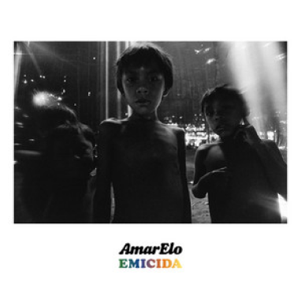
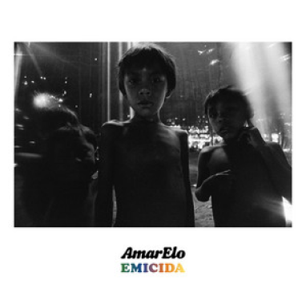

Cananéia, Iguape e Ilha
Comprida
Emicida
[Emicida e (filha)]
Isso
(O que é isso?)
Não, chocalho tem que ser tocado com vontade, tendeu?
Só que sem risadinha, certo?
Sem risadinha, porque aqui é o rap, mano, onde o povo é brabo, entendeu?
O povo é mau! Mau! Mau!
Pra trabalhar nesse emprego de rapper você tem que ser mau!
Hã, tendeu? Sem risadinha, OK?
Será que o Brown passa por isso?
Ou o Djonga? Ou o Rael? Sei lá, meu
Aqui os cara é mau!
Vamo, Nave!
Do fundo do meu coração
Do mais profundo canto em meu interior, ô
Pro mundo em decomposição
Escrevo como quem manda cartas de amor
Crianças, risos e janelas
Namoradeiras, tranças, chitas amarelas
O vermelho das telhas, o luzir da centelha te faz sentir como dentro de uma tela
A esperança pinta em aquarela
Chiadeira de rádio, TVs e novelas
O passeio das abelhas, o concordar das ovelhas nas orelhas
E a vida concorda de tabela
No paralelepípedo, trabalhador intrépido
O motor está no ímpeto onde começa tudo
O vento acalma o rápido, pra todo som eclético
Vitrolas cantam clássicos num belo absurdo
Metrópoles sufocam, são necrópoles que não se tocam
Então se chocam com o sonho de alguém
São assassinas de domingo a pausar tudo que é lindo
Todos que sentem isso são meus amigos, também
Essa aqui vem do fundo do meu coração
Do mais profundo canto em meu interior
Pro mundo em decomposição
Escrevo como quem manda cartas de amor
Do fundo do meu coração
Essa aqui vem do meu coração
Do mais profundo canto em meu interior, ô
Pro mundo em decomposição
(Essa aqui também é uma forma de oração)
Escrevo como quem manda cartas de amor
Estrela, Lua e vaga-lume
Siriris brincando de cardume
Fogueira traz histórias a reviver as memórias
Noêmia de Souza chamava de lume
A noite brinda com negrume
A brisa em tuas flores espalha o perfume
Sem escapatória da cigarra em oratória
Tão íntima da música que dá ciúme
No paralelepípedo, trabalhador intrépido
O motor está no ímpeto onde começa tudo
O vento acalma o rápido, pra todo som eclético
Vitrolas cantam clássicos num belo absurdo
Metrópoles sufocam, são necrópoles que não se tocam
Então se chocam com o sonho de alguém
São assassinas de domingo a pausar tudo que é lindo
Todos que sentem isso são meus amigos, também
O quê? Você quer gravar também?
Peraê, o pai tem que gravar de novo
Do fundo do meu coração
(A gente pode pôr flores amarelas no cabelo das meninas)
(Pode mesmo)
Do mais profundo canto em meu interior
(E no dos meninos também)
Pro mundo em decomposição
(Tantas cores iam deixar a vida com gosto de sobremesa)
Escrevo como quem manda cartas de amor
(Cartas de amor pra todo mundo)
(Todo mundo! Todo mundo! Todo mundo!)
(Vai faltar caneta!)